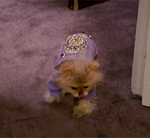

Bravo TV's Vanderpump Rules chronicles the passionate, volatile, hot-and-bothered staff at Lisa Vanderpump's West Hollywood mainstay SUR. Lisa Vanderpump first gained fame as a cast member on "The Real Housewives of Beverly Hills," but her full-time job is as co-owner and boss at SUR, which stands for Sexy Unique Restaurant. Vanderpump balances her motherly instinct with her shrewd business sense to maintain control over the restaurant's wild group of employees who are working at the eatery while pursuing their dreams. Drama seems to be part of the job for the employees at SUR, who tend to date -- and, in most cases, subsequently break up with -- their fellow co-workers. Description from Wikipedia
Pump Rules is the apex of reality television: unparalleled conflict between a real group of friends whose juvenile misbehavior is wildly entertaining. As if that's not enough, the show also features Lisa Vanderpump's many animals - including Jiggy, the pomeranian whose alopecia requires him to wear custom-made outfits.